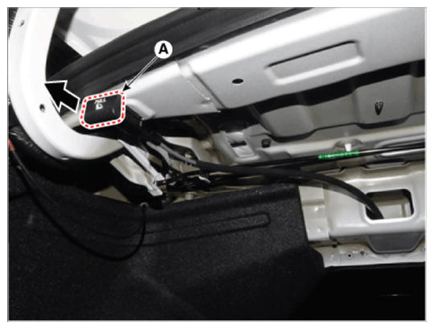
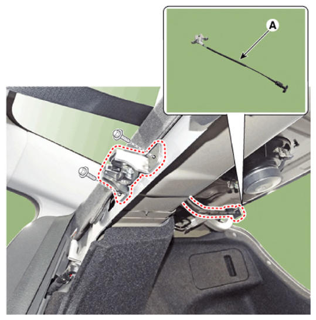

LEMON Manuals
: Even more car manuals for everyone: 1960-2025
Home
>>
Hyundai
>>
2022
>>
Elantra N Line, Standard Trans
>>
Repair and Diagnosis (Single Page)
>>
Accessories & Equipment
>>
Seats
>>
Rear Seat Assembly (Except HEV)
>>
Rear Seat Folding Lever
>>
Repair Procedures
>>
Replacement
Repair Procedures: Replacement
Fold the rear seat back assembly (A) by pulling the folding lever in the direction of the arrow.

Courtesy of HYUNDAI MOTOR AMERICA
Loosen the mounting clips and bolts, remove the rear seat folding lever (A).

Courtesy of HYUNDAI MOTOR AMERICA
To install, reverse the removal procedure.